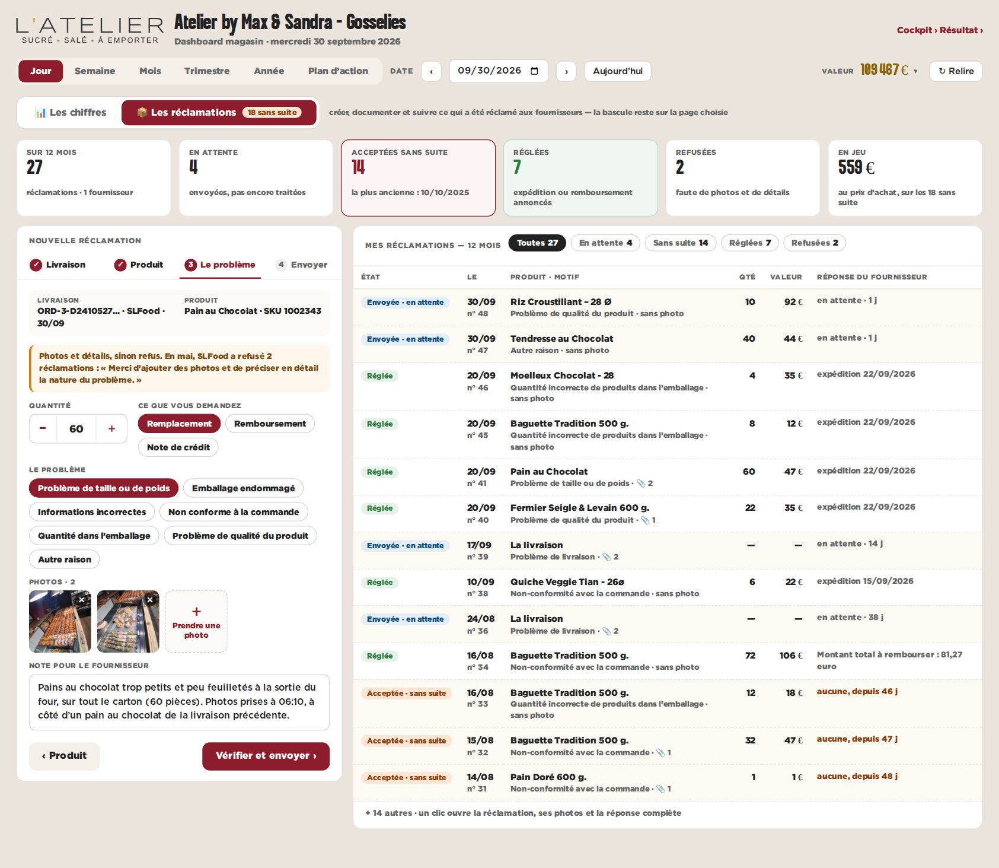
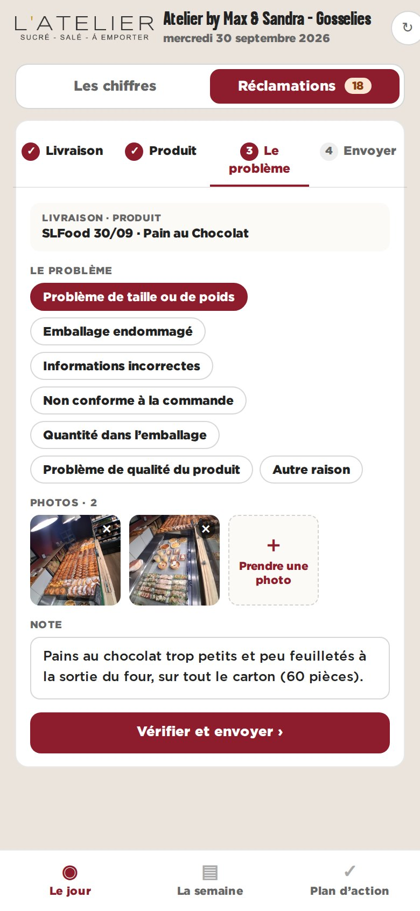

maquette · dashboard magasin · Gosselies · 27 réclamations réelles sur 12 mois (panel) · l’exemple de saisie est une illustration
B — Une bascule « Les chiffres | Les réclamations »
Comme pour les contrôles : une bascule en tête de page. La page Réclamations pose les compteurs (en attente, sans suite, réglées, refusées, ce qui est en jeu), un formulaire en quatre étapes à gauche et l’historique complet à droite, avec la réponse de chaque fournisseur.
Pour
- Le suivi a sa place : les 14 « acceptées sans suite » sautent aux yeux, à relancer.
- Les étapes guident : impossible d’envoyer sans photo ni note.
- Prêt pour la visite consultant : tout l’historique sur une page.
Contre
- Une page de plus à tenir.
- Plus de clics pour une réclamation simple.

bureau — la page Réclamations

téléphone — étape 3, le problème